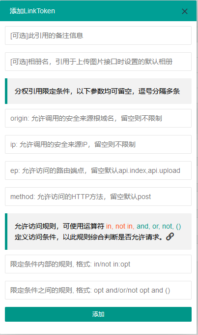
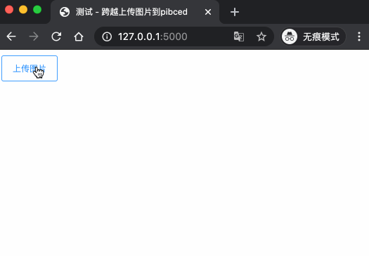
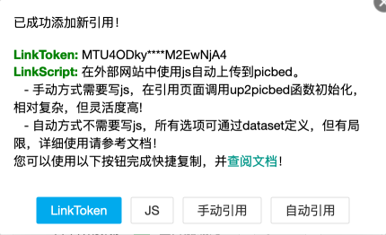

使用说明 - LinkToken及应用¶
LinkToken，或者叫Token分权引用，就是Token的一种映射，是将Token所拥有的权限拆分并加上限制条件进行访问控制，这样能尽可能地实现安全、方便地分发使用。
其工作原理是：用户创建LinkToken并设置允许访问条件，这样在使用LinkToken进行 接口请求时，内置的token钩子会进行认证、鉴权操作，只有此次请求的方法、来源、 IP、接口等完全符合用户设置才会放行请求（实际上是各种条件通过后， LinkToken会找到用户的token并自动完成相关操作），否则拒绝。
比如说，Token能访问所有API，现在新建一个LinkToken，设置它仅允许访问 api.upload 上传接口，且限制origin(了解HTTP访问控制)来源， 这样生成的LinkToken便只能在浏览器中origin所在网站进行跨域调用picbed的upload上传接口， 即便有邪恶的冒充者假冒origin头，但也可以在新建LinkToken时设置安全ip进行限制， 就算泄露也无所谓，删掉或禁用然后再新建一个即可，权限小，专项使用，修改成本小。
如此，大概能明白LinkToken的作用，一个简易的访问控制。
用户可以创建LinkToken，定义调用此引用的安全来源origin、IP，并限定访问某个 路由(API接口)或某个HTTP方法，提交后会得到一个最小权限的LinkToken！然后就 可以在其他网站跨域调用，比如上传图片，实际上也是为了外部上传图片开发的。
LinkToken的使用类似Token，只不过只有一种方法，放到header中：
使用 “Authorization:LinkToken 你的LinkToken值”
curl -XPOST -H "Authorization:LinkToken xxx" http://picbed.example.ltd/api/upload
在 1.5.0 版本发生变更: 在此版本，LinkToken额外增加两种调用方式：query、body，共三种。
- query
即URL查询参数，将 LinkToken=xx 附着在URL中即可，通常用于GET请求。
- body
即表单数据方式，将 LinkToken=xx 放到body中，通常用于POST/PUT/DELETE请求。
可以用在ajax中（跨域），或者直接客户端请求，比如curl。
综述，创建一个LinkToken，需要尽可能小地设置访问条件，且建议专项专用。
备注
Token优先级高，只有程序未发现Token时（不论是否认证通过）才会尝试使用LinkToken！

如图，新建时有两块比较难理解，分权引用限定条件和允许访问规则，两者相结合 决定如何进行访问控制。
分权引用限定条件¶
目前4个条件，origin、ip、ep、method，分别定义了允许访问的来源地址、来源IP和 允许访问哪些api接口(即ep，endpoint，中文叫端点，是picbed所用web框架Flask的 术语，嗯，可能不明白，后面给了一张表来说明)以及允许访问接口的什么方法。
这4个限定条件都可以用半角逗号分隔写多条，也可以留空使用默认值。
origin
来源地址，包含协议、主机、端口，(详细 了解HTTP访问控制)， 比如： http://example.com, https://example.com, 是两个来源，一般情况下， 在跨域环境下才会有此字段。
如果设置了origin字段，正常情况下，只会在跨域时有效，当然假冒也是有可能的， 其实就是一个HTTP_ORIGIN头字段。
如果没设置，则表示直接允许这条。
备注
管理员控制台有一项设置定义了CORS Origin，如果未定义，那么此处不可填； 如果是*，此处随意；如果设置了具体的，此处只能留空或选择已设置的。
ip
来源IP，限制用户访问sapic的真实ip地址，若无则表示直接允许。
ep
endpoint，即端点，这是程序所用web框架术语，就是API接口对应的名字，此项 用来限制允许访问的目标接口。 API接口均以 /api 为前缀，比如 /api/upload, /api/index，用端点来说，就是 api.upload, api.index，分别是上传接口，API首页没啥卵用的充门面接口。
端点是必须有滴，默认是api.upload且自动包含api.index，以下是可能有用的端点说明：
ep(端点)
接口路径
允许方法
说明
api.index
/api/ or /api/index
GET POST
返回hello picbed(若登录则是用户名)
api.upload
/api/upload
POST
上传图片
api.waterfall
/api/waterfall
POST
获取个人图片数据
front.userscript
/sapic.user.js
GET
并不是API接口，返回JS用户脚本
front.feed
/feed
GET
用户本人的图片RSS
更多端点参考 RESTful API
method
定义允许访问ep端点的HTTP方法：GET POST PUT DELETE等，注意，这是针对端点全体的， 不单独对某一个端点设置，method也是必须有滴，默认是post（大小写不敏感）。
允许访问规则¶
上面的4个条件定义了允许访问的来源和目标，而此处的访问规则定义如何组合这几个条件。
这里有两个规则：
某个条件内部的规则
定义某个条件返回True(即允许通过)的规则。
格式是：in: opt, not in: opt, … ，opt即origin、ip、ep、method， 分别表示来源主机和ip、目标接口和方法，允许使用in/not in成员运算符， 意思是请求在(in)或不在(not in)条件(opt)允许范围内时返回True(真)。
需要注意的是，对于任一opt，如果用户没有定义其对应的限定条件，那么此 opt计算时直接返回True允许放行。
如果定义了opt对应的限定条件，但没有定义放行规则，那默认是in！
所有限定条件之间的(平行)规则
定义各个条件最终如何组合，程序根据请求来源和目标，与用户定义的允许来源 和目标进行判断，组合结果返回True才允许请求，否则就丢弃。
格式是：opt and/or/not opt … (opt and/or/not opt) … ，opt表示意义同上， 允许使用and(且)、or(或)、not(非)逻辑运算符与()小括号组合。
注意，此默认规则是： origin and ip and ep and method
小技巧
实际上，如果你懂一些Python或其他开发语言，可以简单理解为组合True之间的 条件，允许使用小括号提升运算优先级，opt的值可认为是True（真），利用 逻辑运算符和()进行组合定义，最终返回True就是允许放行的条件。
上面两个规则是要结合着判定的！
比如说内部规则：in:origin,not in:ep，意思是当请求的来源在限定条件origin内允许访问、 请求的目标接口在限定条件ep外允许访问，这两个各自是独立的。
必须结合平行规则来判断，比如：origin and ep，意思是origin内部判断返回True且 ep内部判断也返回True才允许。
举几个例子（平行规则 | 内部规则）：
origin and ip | in:origin,in:ip
请求来源主机与来源ip在用户限定的origin、ip内允许放行。
origin or ip | in:origin,in:ip
请求来源主机在限定origin内或来源ip在限定ip内任一条件满足允许放行。
ip and ep and method | in: ip, in: ep, in: method
请求来源ip在限定ip内且请求目标接口在限定接口内且请求目标接口的方法在 限定的方法内允许放行
origin or (ip and (ep and not method)) | “不填，使用默认值”
请求来源主机在限定origin内，或者，请求来源ip在限定ip内并且请求目标的方法不在限定方法内， 或者两边的任一结果是True都允许放行。
诸如此类等等，单条语句在允许规则内组合。
警告
如果上述说明看完仍不理解，请保持默认，否则在使用LinkToken时， 程序计算结果可能会触发500异常。
实际上，上述是需要一点对(开发语言的)运算符的了解的。
外部上传图片插件¶
关于LinkToken嘚吧嘚写了那么多，还是要用到真实场景的，其实也是为了实现这处的 功能才首先实现LinkToken的。
sapic是一个简单的图床程序，上传图片都是通过api.upload接口的，所以通过首页、 客户端、命令行等都是允许的，是也，就出现了一个应用场景：在个人/组织的其他 网站下直接上传图片到sapic。
但是上传到sapic这个独立图床，基本上都会出现跨域，而且管理员可能不允许匿名 上传，综合，就需要LinkToken了。
如下图所示，实现的选择图片自动上传，成功后回调给页面。

NO.1 实现这个场景，首先创建一个LinkToken，根据自己的需求填写相关规则，成功 后弹出类似下图提示框（点击表格右侧操作栏复制按钮亦可），可以快捷复制相关内容。

弹框中复制手动引用和自动引用都是用JS和LinkToken的进一步封装，重要的是 LinkToken值和JS地址。LinkToken是一长串编码后的字符串；JS地址固定，就是sapic 静态目录下的文件：/static/sdk/uploader.min.js， 这个js文件（即uploader.js的压缩版）可以单独上传到CDN中以供加速。
注意：这个js请用在 现代化 浏览器环境中（啥？IE？对不起），它对外暴露了 一个 up2picbed 方法，所需参数不少，只有url是必需的。
NO.2 初始化
手动调用
如下，在页面引入uploader.js或压缩版，找一个按钮放到需要上传的地方，写js初始化即可。
<button id="up2picbed">上传</button> <script src="Your Picbed URL/static/sdk/uploader.min.js"></script> <script> up2picbed({ url: "Your Picbed URL", token: "Your Picbed LinkToken", success: res => { alert(JSON.stringify(res)); } }); </script>
推荐使用此方式！
自动调用
如下，引入uploader.js时将所需参数用dataset形式赋好值，js内会自动初始化。
必须要设置 data-auto=”true” ！
需要注意的是，success、fail、progress三个要求是函数，用此自动方法，如要 设置这三个，需要在js引入时全局就已有对应的函数，否则查找不到失效。
<button id="up2picbed">上传</button> <script> function onSuccess(res) { alert(JSON.stringify(res)); } </script> <script src="Your Picbed URL/static/sdk/uploader.min.js" data-url="Your Picbed URL" data-token="Your Picbed LinkToken" data-success="onSuccess" data-auto="true"> </script>
调用up2picbed函数，其接收一个object，有效的选项如下：
小技巧
以下选项用于初始化上传方法，无值时读取dataset自身的初始化参数（即 script引入时以 data- 前缀的部分）。
url
必需，sapic上传接口地址，例如https://sapicd.com/api/upload
elem
上传绑定的元素（通常是按钮，可以ID，也可以是class），这个值默认是 #up2picbed ，也就是说绑定的元素需要设置 id=”up2picbed” 才能找到， 当然也可以改为其他名称。
name
上传文件域的字段名，默认是picbed，一般保持默认，除非管理员在控制台改动了 上传字段，此处可以随之修改。
Added in version 1.2.0.
token
sapic上传所需的LinkToken值，如果为空则是匿名上传，如果存在且认证成功则是 登录状态上传。
album
定义上传图片所属相册，留空表示使用LinkToken设定的默认值（仅当LinkToken 认证成功此项才有效，匿名状态下其最终是anonymous）
title
定义上传图片的描述信息
style
设置绑定元素样式，在 v1.13.4 之前默认会自动填充样式用以美化，不过因为引用js会有一段空窗期， 这期间（秒级）元素是原始状态，所以建议您设置style=false关闭此效果。
v1.13.4 考虑到不太恰当，故取消自动设置，默认不设置样式，用户可以主动设置style=true 开启效果。
开启style可以自定义两个颜色，具体请参考下方【关于style选项的小技巧】。
size
允许上传的图片大小，单位Kb，默认10Mb
在 1.10.0 版本发生变更: 取消超过10Mb时仍然限定的设置
exts
允许上传的图片后缀，默认是jpg|png|gif|bmp|jpeg|webp，用竖线分隔，也不能 超过sapic设置的允许后缀。
auto
仅用在自动调用中，且值是true才会自动调用初始化，附着在dataset
success
上传成功的回调方法，传递一个sapic上传接口成功时返回的json数据，大概是：
{ "src": "http://your-sapic-url/static/upload/anonymous/1588905202617.webp", "code": 0, "sender": "up2local", "filename": "1588905202617.webp", "api": "http://your-sapic-url/api/sha/sha1.xxxxxxxxxx", "msg": null }
code=0表示上传成功，src字段是图片地址，filename是服务器最终保存的图片名。
如果是自动调用，则会通过字符串映射函数，传递res，在脚本执行之前全局要有 此函数，否则不生效转而使用默认函数（会使用console.log控制台输出）。
此回调是页面拿到图片上传后的地址进行后续处理的关键，比如插入到编辑器中、 显示在页面里。
fail
上传失败的回调方法，包括系统500、404、405等HTTP错误，传递一个json对象， code不为0，msg为错误信息。
在自动调用中，同success，默认函数会使用console.error控制台输出。
progress: 上传进度回调，传递百分比，没有默认。
小技巧
关于style选项的小技巧。
给原始按钮增加一个样式（效果参考上方gif图内的按钮）：
.btn {
display: inline-block;
margin-right: 10px;
padding: 9px 15px;
font-size: 12px;
background-color: #fff;
color: #409eff;
border: 1px #409eff solid;
border-radius: 3px;
cursor: pointer;
user-select: none;
}
这是蓝色边框、文字，白色背景的按钮，也是sapic默认附加的样式，可以藉此修改。
可以再加个悬浮效果，蓝底蓝框白色文字：
.btn:hover {
background-color: #409eff;
color: white;
}
覆盖btn的某些样式让按钮保持蓝底蓝框白色文字：
.btn-primary {
color: #fff;
background-color: #409eff;
border: 0;
}
或者主题色换成红色：
.btn-danger {
color: #fff;
background-color: #f56c6c;
border: 0;
}
.btn-danger:hover {
background-color: #f56c6c;
}
也可以自定义其他颜色，使用时，btn为主，辅以primary、danger：
<button class="btn">默认</button>
<button class="btn btn-primary">深蓝</button>
<button class="btn btn-danger">暗红</button>
—–我是一个分割线——-
如果您不想自定义按钮样式，而又想更改默认样式颜色，也是可以的，style参数 可以接收一个逗号分隔的色值，格式是： color,bgColor, 分别是文字和边框 颜色、背景色。